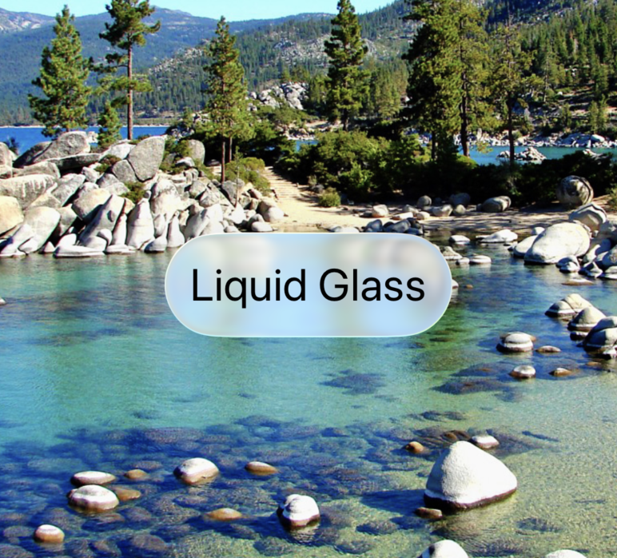

11/06/2025
In this tutorial we are going to dive into internals of Apple's new Liquid Glass design in iOS 26. The Liquid Glass design has been announced just 2 days ago at WWDC25. It is a brand new consistent look across all Apple plaftorms. We are going to take a look at how to create this design and then we will dig deeper.
Liquid glass is a new design language that mimics flowing glass that refracts contents underneath. It provides enagaging effect in UIs sucha as buttons, toolbara and navbars. As you may know, all Apple's SwiftUI elements on iOS use UIView in its implementation. Last year I released library bone.swift that allows you to inspect internal builing blocks of these elements. Let's start with a simple Button. We add buttonStyle(.glass) to add the glass effect.
Button("Liquid Glass"){}
.buttonStyle(.glass)
We can use the library by eppending the ```bone(into: structure.txt)``` modifier. To include Bone library, simpley download it from GitHub, drag the library folder into your Xcode project (add to all targets) and run the app. We can the use the ```bone``` modifier to inspect its structure.
Button("Liquid Glass"){}
.buttonStyle(.glass)
.bone(into: "structure.txt")
Look into the console and search for log called "OUTPUT FILE". To open the file run the following command in your terminal.
open file:///Users..../structure.txt
In the following output, we can see that Apple uses following elements:
GlassButtonStyle with the new SwiftUI.SDFLayer. UIPlatformGlassInteractionView presumably for reacting to elements below the glass. As you can see in superclass argument UIHostingView inherits from UIView. Simmilary, the
_UIInheritedView inherits from _UIGraphicsView which in turn inherts from UIView.
SDF typically stands for Signed Distance Function.
Glassy UIs often involve semi-transparent or frosted-glass effects. SDFs can precisely model the shapes of UI elements and apply gradient or blur effects around their boundaries.
_UIHostingView<Optional<ModifiedContent<Button<Text>, PrimitiveButtonStyleContainerModifier<GlassButtonStyle>>>>:
superclass: UIView
layer: <CALayer:0x600000c32790
sublayers: <SwiftUI.SDFLayer:0x600003508790
->_UIInheritedView:
superclass: _UIGraphicsView
layer: <SwiftUI.SDFLayer:0x600003508790
sublayers: <CALayer:0x600000c32d00 / <CALayer:0x600000c32d60
-->_UIInheritedView:
superclass: _UIGraphicsView
layer: <CALayer:0x600000c32d00
sublayers: <CALayer:0x600000c47cf0
--->UIPlatformGlassInteractionView:
superclass: UICoreGraphicsView
layer: <CALayer:0x600000c47cf0
sublayers: <_TtC7SwiftUIP33_863CCF9D49B535DAEB1C7D61BEE53B5914CGDrawingLayer:0x600002c21300
contents:<CABackingStore 0x105b23cc0 (buffer [117 61] A8)>
-------------------------
OS: iOS26
To better see the glass effect you can use this:
ZStack {
Image("tahoe")
.resizable()
.aspectRatio(contentMode: .fill)
Button("Liquid Glass"){}
.buttonStyle(.glass)
}
We can also inspect the text that uses the glassEffect modifier.
Text("Liquid Glass")
.font(.title)
.glassEffect()
.bone(into: "structure-B.txt")
SwiftUI uses SwiftUI.SDFLayer and UIPlatformGlassInteractionView once again. Here is the full dump:
_UIHostingView<Optional<ModifiedContent<Text, GlassEffectModifier>>>:
superclass: UIView
layer: <CALayer:0x600000c36490
sublayers: <SwiftUI.SDFLayer:0x6000035056b0
->_UIInheritedView:
superclass: _UIGraphicsView
layer: <SwiftUI.SDFLayer:0x6000035056b0
sublayers: <CALayer:0x600000c2d6b0 / <CALayer:0x600000c38000
-->_UIInheritedView:
superclass: _UIGraphicsView
layer: <CALayer:0x600000c2d6b0
sublayers: <CALayer:0x600000c37240
--->UIPlatformGlassInteractionView:
superclass: UICoreGraphicsView
layer: <CALayer:0x600000c37240
sublayers: <_TtC7SwiftUIP33_863CCF9D49B535DAEB1C7D61BEE53B5914CGDrawingLayer:0x600002c25600
contents:<CABackingStore 0x105a37670 (buffer [187 101] A8)>
-------------------------
OS: iOS26

Glass elements are amazing improvements and bring the Apple OSs platforms to a whole new level. I am very excited about the uniformity that Liquid Glass enables on all platforms. This advancement reinforces Apple’s commitment to blending form with function, making interactions more engaging while maintaining the company’s signature design ethos.
Enjoy the rest of WWDC25!